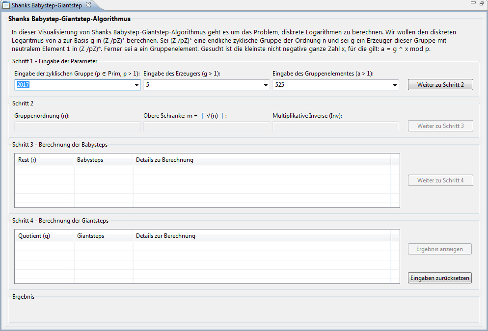
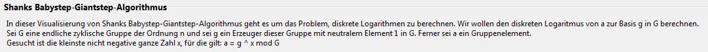
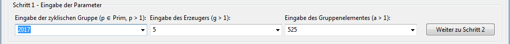
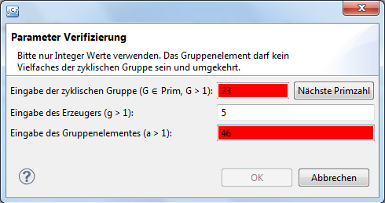
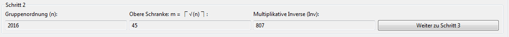
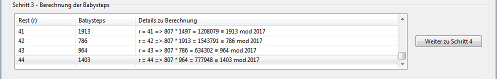
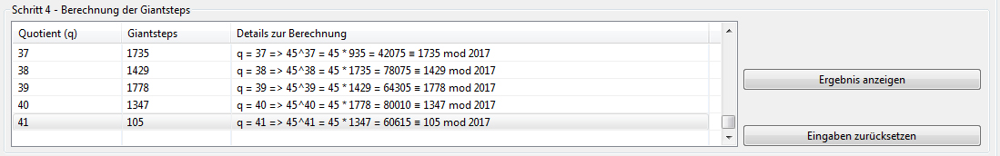
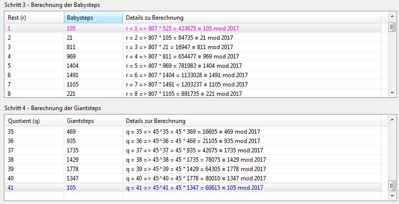
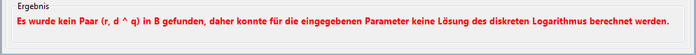
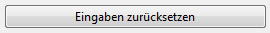

Diese Demonstration soll die Funktionsweise von Shanks Babystep-Giantstep Plug-ins zeigen.
Das Plug-in Shanks Babystep-Giantstep lässt sich über das Menü Visualisierungen oder über den Krypto-Explorer im Tab Visualisierungen starten und in seiner Ansicht maximieren.

Die Sicht des Plug-ins besteht aus 6 Bereichen:
Der erste Bereich beschreibt dynamisch den Algorithmus in seinem Ablauf. Für jeden Schritt werden hier die entsprechenden Erklärungen angezeigt.

Der zweite Bereich beinhaltet die Benutzereingaben. Dort können Werte eingegeben werden oder aus den Dropdown-Boxen vorgegebene Werte ausgewählt werden.

Per Klick auf den Button Weiter zu Schritt 2 werden die Eingaben auf Gültigkeit geprüft. Falls die Eingaben nicht gültig sind, öffnet sich ein Pop-up zum Korrigieren der Eingaben. Die zu korrigierenden Werte werden rot hinterlegt.

Im dritten Bereich werden die Gruppenordnung, die obere Schranke der Gruppenordnung und die multiplikative Inverse berechnet. Danach wird der Button Weiter zu Schritt 3 aktiviert.

Im vierten Bereich werden die Babysteps berechnet und in einer Tabelle mit allen Iterationsschritten präsentiert.

Per Klick auf den Button Weiter zu Schritt 4 werden die Giantsteps berechnet und ebenfalls in einer Tabelle dargestellt. Je nachdem, welche Eingabeparameter man eingegeben hat, kann es sein, dass dieser Schritt übersprungen wird. In diesem Fall liefern die Babysteps bereits die Lösung, da ein Paar (r,1) gefunden wurde, das die Gleichung a = g ^ x mod p erfüllt. Man braucht dann die Giantsteps nicht mehr zu berechnen.

Der Button Ergebnis anzeigen ist nun aktiv: Wenn man ihn anklickt, bekommt man das Endergebnis in dem Ergebnis-Bereich angezeigt. Falls für die eingegebenen Parameter das DL-Problem gelöst werden konnte, werden die Werte in den Tabellen und in dem Ergebnis-Bereich jeweils mit gleichen Farben markiert.

Das Endergebnis wird im Ergebnis-Bereich in der Farbe Grün dargestellt. Des Weiteren werden die Berechnungsformel und die Ausgangsgleichung angezeigt.
Falls der diskrete Logarithmus nicht berechnet werden konnte, wird dazu eine entsprechende Meldung im Ergebnis-Bereich angezeigt.
Der Button Eingaben zurücksetzen löscht alle Benutzereingaben, Berechnungen, Ergebnisse und leert die Tabellen und man kann den Algorithmus von vorne beginnen.
